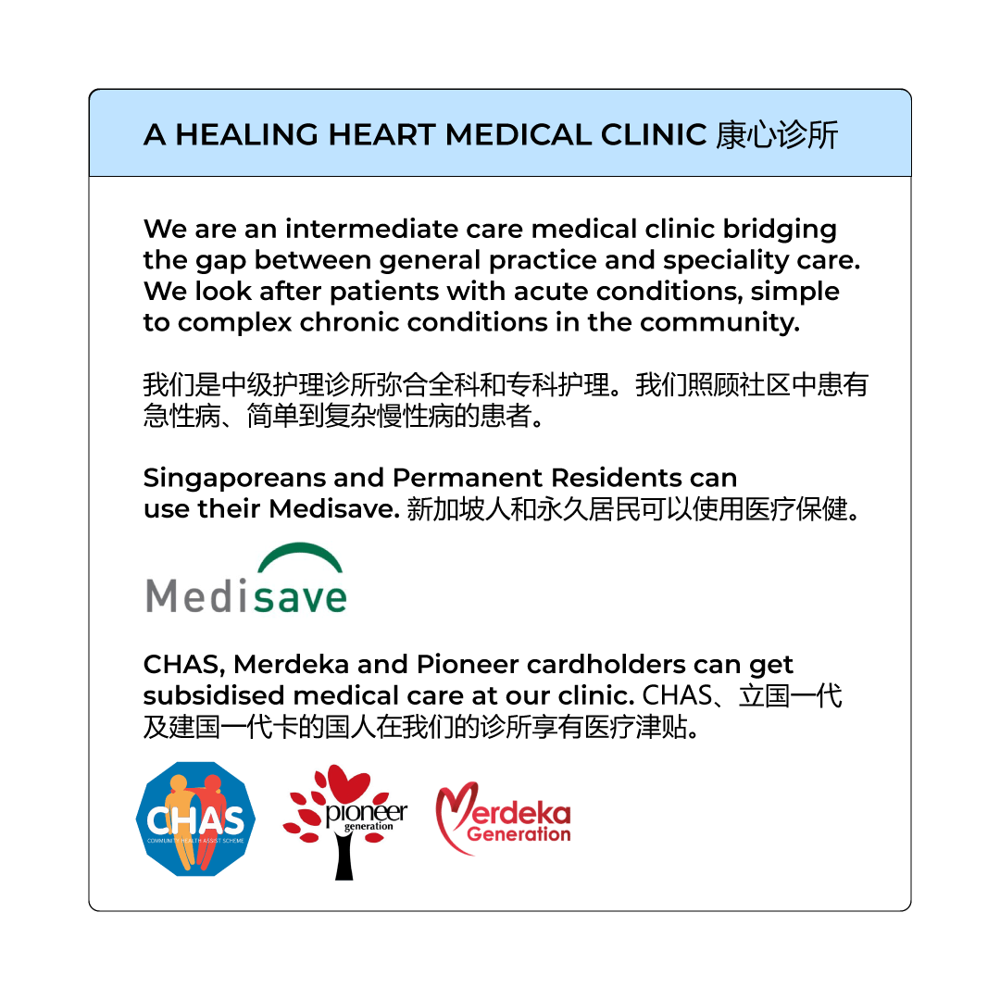

<style>
  /* Triage Section Styling */
  .triage-section { background-color: #fbfcfd; padding: 60px 0; }
  
  .triage-card {
    background: #fff;
    border: 1px solid #eef2f6;
    border-radius: 20px;
    padding: 30px;
    height: 100%;
    transition: 0.3s;
    display: flex;
    flex-direction: column;
    text-align: left;
  }
  .triage-card:hover { 
    transform: translateY(-5px); 
    box-shadow: 0 12px 30px rgba(0,0,0,0.05); 
  }

  .triage-badge {
    display: inline-block;
    padding: 4px 12px;
    border-radius: 6px;
    font-size: 11px;
    font-weight: 800;
    text-transform: uppercase;
    margin-bottom: 20px;
  }

  /* Color Variations */
  .urgent-border { border-top: 5px solid #ff4f81; }
  .urgent-badge { background: #fff0f3; color: #ff4f81; }
  .btn-urgent { background: #ff4f81; color: #fff; border: none; }
  .btn-urgent:hover { background: #e64472; color: #fff; }

  .mgmt-border { border-top: 5px solid #43a7d5; }
  .mgmt-badge { background: #f0f7fa; color: #43a7d5; }
  .btn-mgmt { background: #43a7d5; color: #fff; border: none; }
  .btn-mgmt:hover { background: #3894bd; color: #fff; }

  .routine-border { border-top: 5px solid #25d366; }
  .routine-badge { background: #e9fbf0; color: #25d366; }
  .btn-routine { background: #25d366; color: #fff; border: none; }
  .btn-routine:hover { background: #1eb959; color: #fff; }

  /* Visual Grouping for Services */
  .service-group-label {
    font-size: 13px;
    font-weight: 700;
    color: #43a7d5;
    text-transform: uppercase;
    letter-spacing: 1px;
    margin: 40px 0 20px 0;
    display: flex;
    align-items: center;
  }
  .service-group-label::after {
    content: "";
    flex: 1;
    height: 1px;
    background: #eef2f6;
    margin-left: 15px;
  }

  .acute-banner {
    background: #fff;
    border: 1px solid #eef2f6;
    border-radius: 50px;
    padding: 15px 35px;
    box-shadow: 0 4px 15px rgba(0,0,0,0.02);
  }

  @media (max-width: 767px) {
    .acute-banner { border-radius: 20px; padding: 20px; text-align: center; flex-direction: column; }
    .acute-content { margin-bottom: 15px; }
  }

  #service-navigation .service-tile {
    display: flex;
    flex-direction: column;
    align-items: center;
    justify-content: center;
    text-align: center;
    height: 100%;
    padding: 20px 10px;
    text-decoration: none;
    background: #ffffff;
    border-radius: 12px;
    transition: all 0.3s ease;
    border: 1px solid #f8f9fa;
  }
  #service-navigation .service-tile:hover {
    background: #f0f7fa;
    border-color: #43a7d5;
  }
  #service-navigation .service-tile p { margin: 12px 0 0 0; line-height: 1.3; color: #2c4964; font-weight: 500; font-size: 14px; }

  .article-card { transition: all 0.3s ease; border-radius: 15px; overflow: hidden; }
  .article-card:hover { transform: translateY(-8px); box-shadow: 0 15px 35px rgba(44, 73, 100, 0.08) !important; }
</style>

<section id="hero" class="hero d-flex align-items-center">
  <div class="container">
    <div class="row">
      <div class="col-lg-6 pt-5 pt-lg-0 order-2 order-lg-1 d-flex flex-column justify-content-center text-center text-lg-start">
        <h1 class="visually-hidden">Cardiology & Chronic Care Clinic Singapore | A Healing Heart Medical</h1>
          <p style="color: #2c4964; font-size: 48px; font-weight: 700; line-height: 1.2;">The Bridge Between Hospital Care & Recovery</p>
        <h2 style="color: #43a7d5; font-size: 24px; font-weight: 400; margin-bottom: 30px;">Specialized intermediate heart care and chronic disease management. We provide clinical clarity for complex symptoms in a private clinic setting.</h2>
          <div class="d-flex justify-content-center justify-content-lg-start gap-4 mt-4">
            <a href="/booking" class="btn-outline-clinic">Book Consultation</a>
            <a href="/health-calculator" class="btn-outline-clinic">Heart Risk Calculator</a>
          </div>
      </div>
      <div class="col-lg-6 order-1 order-lg-2 hero-img d-none d-lg-block">
        
      </div>
    </div>
  </div>
</section>

<section class="triage-section">
  <div class="container">
    <div class="text-center mb-5">
      <h2 class="fw-bold" style="color: #2c4964;">Clinical Care Pathways</h2>
      <p class="text-muted">Direct diagnostic paths for acute evaluation, long-term stability, and preventive screening.</p>
    </div>

    <div class="row g-4 mb-5">
      <div class="col-lg-4">
        <div class="triage-card urgent-border">
          <span class="triage-badge urgent-badge">Diagnostic Rule-Out</span>
          <h4 class="fw-bold mb-3">Symptom Evaluation</h4>
          <p class="small text-muted mb-4">Rapid clinical review for chest pain, palpitations, or acute breathlessness.</p>
          <ul class="list-unstyled small mb-auto mt-2">
            <li class="mb-2"><i class="fa-solid fa-bolt me-2" style="color:#ff4f81;"></i><strong>Same-Day Results:</strong> In-clinic cardiac markers for urgent clarity.</li>
            <li class="mb-2"><i class="fa-solid fa-heart-pulse me-2" style="color:#ff4f81;"></i><strong>Rhythm Monitoring:</strong> ECG & Holter services for palpitations.</li>
          </ul>
          <a href="https://clinic.platomedical.com/book/YWhlYWxpbmdoZWFydG1lZGljYWw=/0ab2a431ed254ecbbc343acdaa767789/pV3lgn2" target="_blank" class="btn btn-urgent w-100 mt-4 py-2 fw-bold">Evaluate Symptoms</a>
        </div>
      </div>

      <div class="col-lg-4">
        <div class="triage-card mgmt-border">
          <span class="triage-badge mgmt-badge">Intermediate Care</span>
          <h4 class="fw-bold mb-3">Chronic Stewardship</h4>
          <p class="small text-muted mb-4">Ongoing medical management for heart conditions and post-hospital recovery support.</p>
          <ul class="list-unstyled small mb-auto mt-2">
            <li class="mb-2"><i class="fa-solid fa-bridge me-2" style="color:#43a7d5;"></i><strong>Post-Hospital Bridge:</strong> Bridging the gap from hospital to home.</li>
            <li class="mb-2"><i class="fa-solid fa-gauge me-2" style="color:#43a7d5;"></i><strong>Active Titration:</strong> Precise dosage management for BP & Heart Failure.</li>
          </ul>
          <a href="https://clinic.platomedical.com/book/YWhlYWxpbmdoZWFydG1lZGljYWw=/0ab2a431ed254ecbbc343acdaa767789/U5ROxt9" target="_blank" class="btn btn-mgmt w-100 mt-4 py-2 fw-bold">Manage Recovery</a>
        </div>
      </div>

      <div class="col-lg-4">
        <div class="triage-card routine-border">
          <span class="triage-badge routine-badge">Preventive Health</span>
          <h4 class="fw-bold mb-3">Risk Detection</h4>
          <p class="small text-muted mb-4">Identifying cardiovascular and metabolic risks before they become clinical events.</p>
          <ul class="list-unstyled small mb-auto mt-2">
            <li class="mb-2"><i class="fa-solid fa-magnifying-glass me-2" style="color:#25d366;"></i><strong>Tiered Screenings:</strong> Heart-focused and whole-body profiles.</li>
            <li class="mb-2"><i class="fa-solid fa-shield-virus me-2" style="color:#25d366;"></i><strong>Routine Care:</strong> Vaccinations & Statutory medical checks.</li>
          </ul>
          <a href="/booking" class="btn btn-routine w-100 mt-4 py-2 fw-bold">Book Screening</a>
        </div>
      </div>
    </div>
  </div>
</section>

<section id="service-navigation" class="service-navigation py-5">
  <div class="container">
    <div class="text-center mb-5">
      <h2 class="fw-bold" style="color: #2c4964;">Our Clinical Expertise</h2>
      <p class="text-muted">Focused medical services for heart and metabolic longevity.</p>
    </div>

    <div class="service-group-label">Cardiovascular & Intermediate Care</div>
    <div class="row g-3 mb-5">
      <div class="col-6 col-md-3">
        <a href="/cardiology" class="service-tile">
          <div class="icon-circle"><i class="fa-solid fa-heart-pulse"></i></div>
          <p>Cardiology</p>
        </a>
      </div>
      <div class="col-6 col-md-3">
        <a href="/hypertension-cholesterol-management" class="service-tile">
          <div class="icon-circle"><i class="fa-solid fa-gauge-high"></i></div>
          <p>BP & Cholesterol</p>
        </a>
      </div>
      <div class="col-6 col-md-3">
        <a href="/rapid-diagnostics" class="service-tile">
          <div class="icon-circle"><i class="fa-solid fa-droplet"></i></div>
          <p>Rapid Diagnostics</p>
        </a>
      </div>
      <div class="col-6 col-md-3">
        <a href="/post-hospitalisation-recovery" class="service-tile">
          <div class="icon-circle"><i class="fa-solid fa-bed-pulse"></i></div>
          <p>Post-Hospital Care</p>
        </a>
      </div>
    </div>

    <div class="service-group-label">Metabolic Health & Internal Medicine</div>
    <div class="row g-3 mb-5">
      <div class="col-6 col-md-3">
        <a href="/diabetes-management" class="service-tile">
          <div class="icon-circle"><i class="fa-solid fa-syringe"></i></div>
          <p>Diabetes care</p>
        </a>
      </div>
      <div class="col-6 col-md-3">
        <a href="/metabolic-health-weight" class="service-tile">
          <div class="icon-circle"><i class="fa-solid fa-weight-scale"></i></div>
          <p>Weight Health</p>
        </a>
      </div>
      <div class="col-6 col-md-3">
        <a href="/asthma-lung-management" class="service-tile">
          <div class="icon-circle"><i class="fa-solid fa-lungs"></i></div>
          <p>Asthma & Lung</p>
        </a>
      </div>
      <div class="col-6 col-md-3">
        <a href="/hormone-optimization" class="service-tile">
          <div class="icon-circle"><i class="fa-solid fa-dna"></i></div>
          <p>Hormone Wellness</p>
        </a>
      </div>
    </div>

    <div class="service-group-label">Prevention & Wellness</div>
    <div class="row g-3">
      <div class="col-6 col-md-3">
        <a href="/health-screening" class="service-tile">
          <div class="icon-circle"><i class="fa-solid fa-user-check"></i></div>
          <p>Health Screening</p>
        </a>
      </div>
      <div class="col-6 col-md-3">
        <a href="/vaccination" class="service-tile">
          <div class="icon-circle"><i class="fa-solid fa-shield-virus"></i></div>
          <p>Vaccinations</p>
        </a>
      </div>
      <div class="col-6 col-md-3">
        <a href="/skin-hair-care" class="service-tile">
          <div class="icon-circle"><i class="fa-solid fa-hand-holding-medical"></i></div>
          <p>Skin & Hair Care</p>
        </a>
      </div>
      <div class="col-6 col-md-3">
        <a href="/osteoporosis-bone-care" class="service-tile">
          <div class="icon-circle"><i class="fa-solid fa-bone"></i></div>
          <p>Bone Health</p>
        </a>
      </div>
    </div>
  </div> 
</section>

<section id="about" class="about py-5">
  <div class="container">
    <div class="text-center mb-5">
      <h2 class="fw-bold" style="color: #2c4964;">Expert Clinical Stewardship</h2>
      <p class="text-muted">Bridging the Gap in Singapore Healthcare</p>
    </div>
    <div class="row align-items-center">
      <div class="col-lg-6">
        <div class="content pe-lg-4">
          <p class="lead">Most medical consultations address a snapshot in time. At <b>A Healing Heart Medical</b>, we manage your clinical trajectory.</p>
          <p>Led by <b>Dr. Gerald Thang</b>, our clinic serves patients with complex symptoms—such as chest pain, chronic fatigue, or metabolic instability—that require more than a standard general consult.</p> 
          <p>We specialize in <b>Intermediate Care</b>: providing the diagnostic intensity of a hospital environment with the personalized oversight of a private physician. Whether rule-out cardiac distress or tracking post-surgical recovery, we ensure you navigate your health journey with data-led confidence.</p>
          <div class="mt-4">
            <a href="/who-we-are" class="text-decoration-none fw-bold" style="color: #43a7d5">Read About Dr. Gerald Thang <i class="fa-solid fa-arrow-right"></i></a>
          </div>
        </div>
      </div>
      <div class="col-lg-6 text-center">
        
      </div>
    </div>
  </div>
</section>
